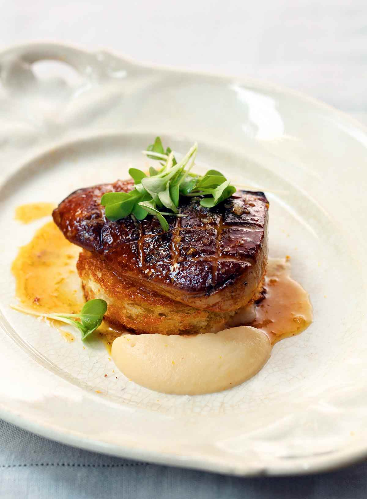

Pan Seared Foie Gras

Description
Pan-seared foie gras is an elegant appetizer made with foie gras, a grapefruit-Chardonnay sauce, and apple purée.
Superb for when you feel like going fancy schmancy.
And it’s easier than you think to make.
Ingredients
- 3 tablespoons (1 1/2 oz) unsalted butter
- 3 Granny Smith apples, peeled, cored, and thinly sliced
- 3/4 cup dry white wine
- 3 tablespoons quince jelly or quince paste
- Six (4-oz) pieces grade A foie gras, preferably Hudson Valley foie gras
- Sea salt and freshly ground black pepper
- 1 cup fresh grapefruit juice
- 1/2 cup late-harvest Chardonnay
- Zest from 1/2 orange, preferably organic
- 1/4 teaspoon finely chopped rosemary leaves
- 1 1/2 teaspoons unsalted butter
- Six (1/2-inch-thick) slices brioche
Steps
- Melt the butter in a medium sauté pan over medium heat. When the butter begins to foam, add the apples, wine, and jelly. Cook, stirring frequently, until the apples are tender, about 5 minutes. Transfer the mixture to a blender and purée until smooth. Set aside at room temperature.
- Place a large sauté pan over medium-high heat. Using a paring a knife, gently score the foie gras slices with a diagonal pattern on 1 side. Season to taste with salt and pepper. Place 3 slices in the pan and sear until golden brown, about 2 minutes. Reduce the heat slightly, turn the foie gras over, and cook for an additional 2 minutes. Transfer to a plate and set aside to rest. Wipe the pan clean and repeat with the remaining 3 slices of foie gras.
- Pour the excess pan drippings out of the pan, leaving just a thin film in the pan and reserving 3 tablespoons of drippings to add to the reduction. Deglaze the pan with the grapefruit juice over medium-high heat, scraping up any browned bits with a wooden spoon. Simmer until the juice is reduced by half, about 2 minutes. Add the Chardonnay, orange zest, rosemary, and the reserved pan drippings and simmer for 1 minute. Add the butter, remove from the heat, and whisk until well combined. Season the reduction to taste with salt and pepper.
- Preheat the broiler.
- Using a 3-inch round cookie cutter, cut the brioche into rounds and place them on a baking sheet. Toast the brioche rounds under the broiler until golden brown, about 1 minute per side.
- Place the brioche toasts in the center of 6 serving plates. Lay the foie gras slices on top of the brioche. Spoon the apple purée around the foie gras, drizzle with the grapefruit reduction, and, if desired, scatter the mâche leaves over the top.
- Ready to serve.